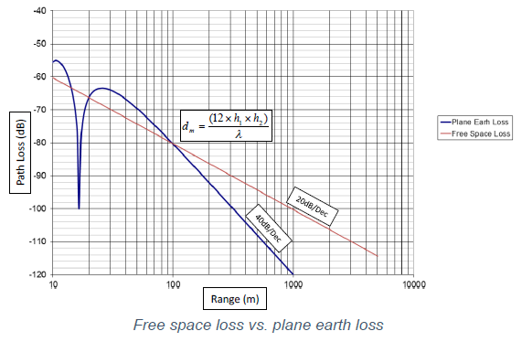

蓝牙5特性一 2X 数据吞吐量
Bluetooth LE 4.2来说，蓝牙5的速率可以提升一倍是因为PHY层可以支持2Mbps数据传输率。在蓝牙5之前，LE只支持1Mbps PHY的速率。在此强调一点，PHY的速率只为蓝牙往空中丢数据的速率，并不等同于点对点设备的主端蓝牙芯片的应用层传到从端蓝牙芯片应用层的数据吞吐量。
蓝牙单包数据结构
蓝牙4.2一下数据结构
先看Bluetooth 4.0/4.1 BLE数据传输率数据推演，设置主机Master端传输20个字节数据，其需要用时328us，从机响应80us，加上发射机发完一包数据至少需要休息150us，一个完整周期为328us + 150us + 80us + 150us，有效数据20字节，数据传输率226kbps。
蓝牙4.2数据结构
Bluetooth 4.2 LE部分扩充了单包数据载荷，每包可传输244字节，同理可以算出蓝牙4.2的数据传输率为781kbps。

蓝牙5数据结构
Bluetooth 5 BLE增加了2M PHY，传输244字节数据时间从2120us将为1060us，从机响应时间也从80us下降到40us，数据传输率提升一倍，到1.39Mbps。
蓝牙5大数据传输应用场景
蓝牙5 PHY层支持2M的速率可以说明两个问题 :
单位时间内可传输的数据吞吐量提升一倍。
传输相同数据量的数据蓝牙5的时间可降低一倍，从而使得蓝牙芯片可以更长时间的处于休眠模式，以降低蓝牙整体功耗。
更快的数据传输率可以用来做什么呢？
OTA空中升级，想必大家都有尝试过自己的智能穿戴设备升级工具，那体验，真的是非常糟糕，现在数量提升了，肯定马上把该速率用在OTA上，另外，在测试市面手环产品的过程中我们自己也看到一个非常糟糕的设计，大多数客户都还停留在使用BLE4.1产品，即使 使用了BLE4.2也很少有客户用到大PDU来改善OTA升级，这里希望各位工程师好好考虑该如何优化自己的产品，合理利用大数据传输提升OTA速度。下面从蓝牙SPEC上摘录几代BLE的规范和计算得来极限数据传输率供大家参考使用。
语音图片传输，2M PHY的应用方向还有大块加密数据的瞬时传输，语音数据的传输，图片传输。
IOS SPP 透传，经典蓝牙与ISO通过SPP传输需要额外mfi芯片，有了2M PHY，无需MFI芯片支持可以提高手机和蓝牙的数据通讯速率。
蓝牙5特性一 8X 大广播包数据传输
蓝牙4.x广播特性
蓝牙广播
蓝牙从机设备正常工作时会以一定频率发送广播包，告知周围设备可以来连接自己(connectable)，或者单纯发送广播数据(non-connectable)给到周围主设备。从机广播中可能包含设备的相关信息，设备名称，设备具有的服务uuid 等，SIG有明确规定。
广播包类型
广播包可以拆分为两种，一种是从机设备的广播的数据，一种是主机设备扫描到从机的广播包后响应返回给冲击设备的数据。
广播包 （Advertising Data):设备端主动发送的周期数据。
响应包 （Scan Response):主机主动扫描的情况下， 发送扫描请求给从机， 从机返回扫描响应数据。
4.x广播包格式
有效数据（significant）和无效数据（non-significant）两部分。
有效数据部分包含若干个广播数据单元，称为 AD Structure 。如图所示，AD Structure 的组成是：
长度 Len ，表示这个 AD Structure 的长度（除去 Len本身 1）
类型 AD Type
标记这段广播数据代表什么， 比如设备名， uuid 等。
数据 AD data
无效数据部分广播包的长度必须是 31 个 byte，如果有效数据部分不到 31 自己，剩下的就用 0 补全。这部分的数据是无效的。
以一个例子说明广播包和他的作用：
下图为CC2540 BLE抓包工具抓包的截图，右边AdvData内的数据即为广播数据，该广播数据由工程师自己设计，最大支持的字节为31个直接，两横条之间Time的差值即为广播间隔。
应用场景
通常情况，广播包的作用如下：
- 作为可连接设备时，广播包内带有产品信息，比如品牌logo，MAC地址等。
- 作为beacon设备时，可能携带传感器数据上报给集中器，可以携带beacon编号信息，MAC地址，特殊编码数据。
- 作为可连接设备的广播。
但对应Beacon应用来说，广播数据和可传输的数据长度就显得尤为重要。beacon广播结合Scan端集中器(Broadcaster and Observer)可以用于智能家具节点数据上报，工厂自动化设备数据上传，人员管控，冷链物流监控，特殊区域布防等多种应用场景；beacon广播结合地图亦可以作为室内导航定位的辅助工具，为室内定位提供良好的解决方案(目前已经相继出现好几家机场，医院，商城实现手机室内导航，其原理即依靠大量布置beacon点和手机地图匹配，利用手机扫描周围beacon广播信息，实现定位与导航，但定位精度存在偏差，不如UWB精度高)。
BLE的低功耗纽扣电池供电特性，小体积，可以和手机互联互通，使得beacon在上述应用呈爆发式增长。但其中会存在一个棘手的问题，31字节的广播包太短，每次广播能携带的有效数据太少，另外广播通道太少，只有37,38,39三个通道广播，可能存在多设备上报数据信道的干扰问题。
蓝牙5广播特性
蓝牙5扩展了广播数据的有效载荷，提升了广播通道数，为上述应用和新的应用提供了更多技术储备。下面我们就来看看蓝牙5的8x 大广播包。
蓝牙5广播包格式
蓝牙4.x协议规定蓝牙广播数据包每包数据最大只支持31字节数据传输，广播信道限制在37,38,39三个信道。在原有的用于传输广播数据的PDU（ADV_IND、ADV_DIRECT_IND、ADV_NONCONN_IND以及ADV_SCAN_IND，称作legacy PDUs）的基础上，蓝牙5增加了扩展的PDU（ADV_EXT_IND、AUX_ADV_IND、AUX_SYNC_IND以及AUX_CHAIN_IND，称作extended advertising PDUs)，同时也允许蓝牙在除开37,38,39三个通道之外的其他37个信道上发送长度介于0-255字节的数据。
蓝牙5.0把广播信道抽象为两类，一种叫主广播信道(primary advertisement channels)，另一种叫次广播信道，或者第二广播信道（Secondary Advertising Packets）。
主广播信道只工作在37，38，39三个信道，最大广播字节为31字节，广播的数据类型增加了一个ADV_EXT_IND指令，ADV_EXT_IND指令即为告知监听设备，我要广播大数据包广播了。
ADV_EXT_IND指令包含要在第二类次广播信道上发送的内容，第二广播信道发送广播数据的信道，物理PHY层，1M PHY，Coded PHY，2M PHY 等。
其示意如下图所示，首先在主广播信道广播ADV_EXT_IND信息，然后利用次广播信道(0-36 channel)广播255byte 数据。

如果我们有大于255字节的数据需要发送，蓝牙5.0广播协议栈中已经定义了AUX_CHAIN_IND，用于在第二广播信道上连续传输255字节数据，这样我们可以利用它发送超过255字节的大数据包数据。
第二广播信道（Secondary Advertising Packets）中的 AUX_ADV_IND、以及AUX_CHAIN_IND已经介绍，下面再看看AUX_SYNC_IND指令。

AUX_SYNC_IND指令用于大广播包数据的周期发送，广播者可随时修改其广播数据，但其他监听者依然可以监听到其周期性的广播内容，AUX_SYNC_IND指令包含广播间隔，调频序列，广播数据，广播者MAC地址等信息。
主机扫描过程中会首先监听到37,38,39，如果为大广播包，广播数据帧会携带大广播信道，主机会调频到相应信道进行数据监听。
蓝牙5大广播包应用场景
蓝牙4.2的广播数据31字节，蓝牙5.0的广播数据255字节，提升了8倍之多，由于使用了更多的广播信道，多个设备上报数据的抗信道干扰能力得到提升，另外由于多信道的使用，可以同步广播多种不同制式的信息，比如同时广播ibeacon和eddstone。结合蓝牙5 long range mode远距离传输模式，蓝牙的远距离beacon可以用在冷链物流，gps追踪器，工业自动化等在之前距离场合。
蓝牙5特性一 4X 远距离数据传输
链结预算Link Budget
传输距离理论
在部署无线电通信时，链路预算(Link Budget)就是指从发射机开始通过射频媒介直到接收机之间的所有增益和衰减的总和。链路预算计算的目的是确保最终的接收信号强度处于接收机的接收灵敏阈值之上。简单来说，链路预算越大，发送端和接收端的距离越远。Link budget [dB]= TX Power [dBm]- Sensitivity level [dBm]
- 举例说明:
以TI CC2640R2F芯片为例，最大TX Power 5dbm, 最大接收灵敏度 -97dBm,根据上述公式，5 dBm - (-97 dBm) = 102 dB。
以Nordic Nrf52840芯片为例，最大TX Power 8dbm, 最大接收灵敏度 -96dBm,根据上述公式，8 dBm - (-96 dBm) = 104 dB。 - 结论:
链结预算值越大，传输距离越远。
无线电传输损耗
自由空间损耗
顾名思义，即为无线信号在空气中传播的损耗，可以由以下公式得到
F为频率，单位为G hz,D为发射端与接收端距离，单位为千米。由该公式可知路损的相关因素分为以下两个:
1).发射天线与接收天线间的距离。
2).频率， 频率越高路损越大。
现实中无线电对地平面损失
自由空间损耗是理想状态下无线电的损耗，实现当中还有两个考虑的因数，第一，天线损耗；第二，地表对无线的吸收和反射。
在考虑天线损耗和地表对无线的吸收和反射，我们可以概括得出下列公式。
h1和h2为发射端和接收端对地距离，k为自由空间波数，r是发射端和接收端的天线。
绘制自由空间损耗和地平面损失和距离关系的图如下所示：

在外界条件一致的情况下可以简化得到下面非常有意义的公式：
该公式的结论如下：
无线电传输距离和发射端，接收端对地距离成正比，距离地面越高，传输越远。
蓝牙5 4X 远距离
在4.2及以前的版本中蓝牙低功耗在信道传输中未使用纠错编码技术，标准规定的基准灵敏度为-70dBm(基本上每一家蓝牙芯片厂商都可以做到-90dBm)。 蓝牙5引入了卷积前向纠错编码(Convolutional Forward Error Correction Coding) 技术，提高了接收机的抗干扰能力，将接收机的参考灵敏度分别提高到-75dBm (S=2编码)和-82dBm (S=4编码), 同时提高了接收机的载干比(载干比：C/I=载波信号强度/干扰信号强度)性能。使得在保持TX相同功耗情况下，蓝牙的距离提升了4倍，下面来说说如何做到提高接收灵敏度,依靠的就是编码PHY。
BLE编码PHY
蓝牙5除硬件支持1M,2M PHY，还支持两种编码方式的PHY，这两种编码方式的PHY是基于1M PHY的基础，使用1M PHY的物理通道。新的编码分为两种，一种编码PHY为500kbps(S=2)，另外一种编码PHY是125kbps(S=8)。
编码PHY的数据包类型和1M PHY/2M PHY 数据包类型略有不同，增加了CI(coding indicator)和TERM1和TERM2。CI和TERMx构成了FEC(Forward Error Correction)区块，利用FEC恢复在传输过程中的错误数据位，以提升接收灵敏度。
经过S=2或者S=8的编码，接收灵敏度可以提升4-6dBm，距离相应提升2-4被。但是进化出一种新的能力必然会牺牲自己一项能力，和1M PHY相比，传输的距离提升了，但传输相同数据包，编码PHY的功耗比1M PHY就要高出一节 (BLE 规定的包长一致，部分payload变为FEC data，实际有效的传输数据减少)。
数据流传递方式
- 1M/2M PHY
在没有编码方式下，TX数据包数据bit流通过加密(可选项)，CRC效验，白化之后发送出去；RX端接收到数据流解调后校验CRC，解密，得到原始数据包数据。
- 500kbps,125kbps 编码PHY
相对 1M/2M 未编码PHY的数据流，500k PHY, 125K phy多出两个部分：FEC(前向错误纠错) 编码和模式映射，大家肯定要问如何实现FEC，我们以编码PHY的流程来完整讲述一下数据流的编码和传输过程。
错误检验 — CRC效验错误
接收机首先会检测接收到的Access Adrees是否正确，如果Access Adrees错误，丢弃该数据包，检测完Access Adrees，接收机会去效验整个数据包，判断24位CRC是否完全吻合。白化
数据白化的目的是在传输数据遇到连续000000，或者连续111111序列时，进行合理编码，减少传输长串重复序列数据。编码 — 前向错误编码
前向错误编码算法使得接收机有能比恢复该数据包中的传输错误数据位，通过把原始数据进行编码得到新的数据流，即使新的数据流在传输过程中有个别位数据错误，FEC解码也能恢复原始数据，从而提高了传输的误码率。BT5.0使用的如下编码算法:
G0(a0)先进行传输，G1(a1)在G0传输完成之后传输。
- 模式映射 — Pattern Mapper
模式映射的目的是整理输出前向错误编码数据，输出的方式分为两种模式(P symbols)，一种P=1(S=2)，一种P=4(S=8)，两种模式下把前向错误编码数据进行加工，然后输出。由下面的表格所示，当P=1时，输出的data和输入保持不变，1位输入，1为输出；当P=4时，编码为4位再输出，所以可以看到P=4(S=8)时，输出的data数据量会更多，更进一部压缩实际可以传输的有效payload数据。
蓝牙远距离应用场景
得益于前向错误编码和模式映射，使得蓝牙数据在传输过程中，RX端对整个payload数据包解码纠错能力有不同提升(简单说即为提高RX端接收灵敏度)，蓝牙5的传输距离才有显著的提升。125kbps使用S=8模式，传输距离相对传统BLE提升4倍，相应牺牲的数据传输率最多，500kbps使用S=2模式，传输距离相对传统BLE提升2倍。长距离模式可以有效可以支持到400-500米范围内BLE通讯。